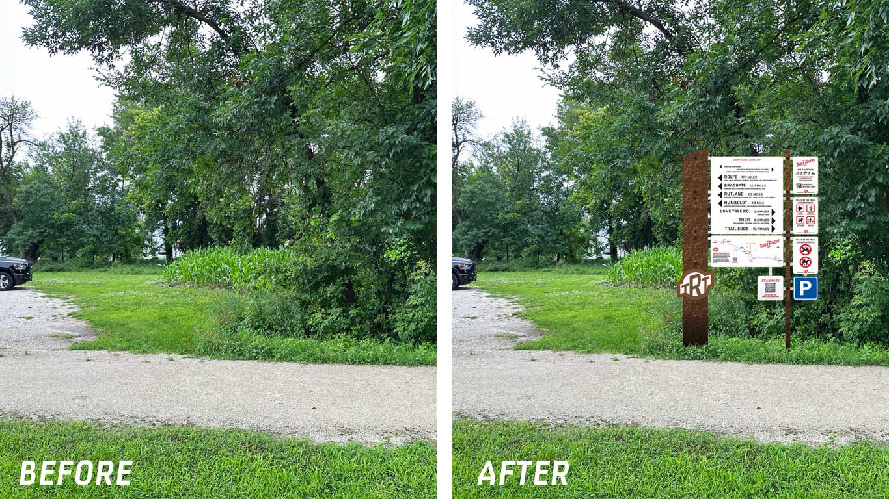

A look at the signs in place on the trail
JERRY HATCHER ROAD TRAIL ACCESS - HUMBOLDT
JERRY HATCHER ROAD TRAIL ACCESS (DETAIL) - HUMBOLDT
COUNTY K ROAD TRAIL ACCESS - DAKOTA CITY
LONE TREE ROAD TRAIL ACCESS - SIGN PLACEMENT
LONE TREE ROAD TRAIL ACCESS - DECORATIVE RAILROAD TIE PLACEMEN (EAST)
LONE TREE ROAD TRAIL ACCESS - SIGN AND DECORATIVE RAILROAD TIE PLACEMENT (WEST)
EXAMPLE OF BRIDGE SIGN PLACEMENT ON HISTORIC STEEL TRESTLE RAILROAD BRIDGE AT GOTCH STATE PARK
EXAMPLE OF ROAD SIGN PLACEMENT, ALONG WITH DECORATIVE RAILROAD TIES, AT LONE TREE ROAD TRAIL CROSSING
EXAMPLE OF SPECIAL SIGNS AT A Y INTERSECTION ON THE MAIN TRAIL IN HUMBOLDT